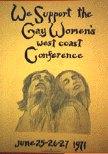
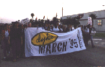

| HOME | SITE MAP |
Restrospective:

* Los Angeles Lesbian CHRONOLOGY, 1970-1990
Link
Some photos from the chronology Photos
* LOS ANGELES LESBIAN ORAL HISTORY PROJECT
Answer our questionnaire Link
* A Slide show: "History of Los Angeles Lesbian Activism, 1970-1990" is available for class and group presentations.
Contact the Lesbian Legacy Collection.
Some of the slides from the show: Photos
* Article on The WOMEN OF ONE - a homophile organization in Los Angeles. Link
* Johnnie Phelps, (1922-1997) - In Memoriam Link
* June Mazer Lesbian Collection, a lesbian archive - West Hollywood Link
* The Los Angeles Woman's Building (1973-1991).
Not lesbian-specific but always had a strong lesbian presence Web Site
* Sisterhood Bokkstore (1972-1997).
Not lesbian-specific but co-founded by two lesbians and one heterosexual woman. Web site is preserved as a herstorical site. Link

* Los Angeles Dyke March Link
* Lesbianas Unidas - Los Angeles Link
* ALAS - American Latin AllianceS
* ULOAH - United Lesbians of African Heritage Link
* LAAPIS - Los Angeles Asian Pacific Islander Sisters Link
* Old Lesbians Organizing for Change (OLOC).
This is a national organization, but some of its roots are in the Los Angeles area, going back to 1987. Link
* SCWU - Southern California Women for Understanding Link
* PROJECT 10
Support groups for lesbian and gay/bi/transgender high school students. Founded in Los Angeles by Virginia Uribe in 1984 Link
RETURN TO THE LESBIAN HISTORY PROJECT MAIN PAGE Link